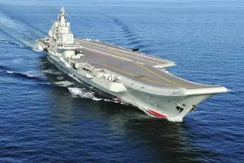

从2012年11月至今是中国特色社会主义新时代
2021年02月03日 11:47:11 来源：光明日报 作者： 曲青山 
惊天动地：中国共产党在中国特色社会主义新时代推进并将在本世纪中叶实现强国大业
2012年党的十八大以来，以习近平同志为核心的党中央，团结带领全党全国各族人民，举旗定向，谋篇布局，从理论和实践结合上深刻回答了新时代坚持和发展什么样的中国特色社会主义、怎样坚持和发展中国特色社会主义这个重大时代课题，创立习近平新时代中国特色社会主义思想，统揽伟大斗争、伟大工程、伟大事业、伟大梦想，统筹推进“五位一体”总体布局、协调推进“四个全面”战略布局，坚持完善和发展中国特色社会主义制度，推进国家治理体系和治理能力现代化，解决了许多长期想解决而没有解决的难题，办成了许多过去想办而没有办成的大事，推动党和国家事业取得历史性成就、发生历史性变革，推动中国特色社会主义进入新时代。
新时代党和国家事业的历史性成就和历史性变革，体现在以下几个方面：坚定不移全面加强党对一切工作的领导，党的凝聚力、战斗力、领导力、号召力大大增强。坚定不移贯彻新发展理念，推动我国发展不断朝着更高质量、更有效率、更加公平、更可持续、更为安全的方向前进。我国已经成为世界第二大经济体、第一大工业国、第一大货物贸易国、第一大外汇储备国，对世界经济增长的贡献率达到30%左右。取得载人航天、探月工程、量子通信、超级计算、海底深潜、大飞机制造、航空母舰等一大批标志性成果。坚定不移全面深化改革，推动改革呈现出全面发力、多点突破、蹄疾步稳、纵深推进的崭新局面。各领域基础性制度框架基本确立。许多领域实现历史性变革、系统性重塑、整体性重构。坚定不移全面推进依法治国，党运用法律手段领导和治理国家的能力显著提高。全面推进科学立法、严格执法、公正司法、全民守法，法治建设取得新进展。坚定不移加强党对意识形态工作的领导，全党全社会思想上的团结统一进一步巩固。马克思主义在意识形态领域的指导地位得到加强，社会主义核心价值观大力弘扬，文化事业和文化产业繁荣发展，国家文化软实力显著增强。坚定不移坚持在发展的基础上保障和改善民生，人民群众获得感、幸福感、安全感不断提升。脱贫攻坚成果举世瞩目，现行标准下农村贫困人口全部脱贫，8年来累计脱贫近1亿人，全国832个贫困县全部摘帽。人民生活水平显著提高，中等收入群体超过4亿人。高等教育进入普及化阶段。城镇新增就业连续多年年均超过千万人。建成世界上规模最大的社会保障体系，基本医疗保险覆盖超过13亿人，基本养老保险覆盖近10亿人。居民平均预期寿命提高到77.3岁。坚定不移推进生态文明建设，推动美丽中国建设迈出重要步伐。下大气力治理环境污染，生态环境恶化的局面得到扭转。坚定不移推进国防和军队现代化，推动国防和军队改革取得历史性突破。军队组织形态实现重大变革。坚定不移推进中国特色大国外交，营造了我国发展的国际和平环境和良好周边环境。中国在国际上的话语权得以提升，对世界的影响力不断扩大。坚定不移推进全面从严治党，党的执政基础和群众基础更加巩固。全面从严治党成效卓著，反腐败斗争压倒性态势已经形成并巩固发展。
新时代中国共产党对全面建成小康社会、开启全面建设社会主义现代化国家新征程、实现中华民族伟大复兴中国梦进行了战略谋划。党的十九大将实现第二个百年奋斗目标分为两个阶段安排。第一个阶段，从2020年到2035年，基本实现社会主义现代化；第二个阶段，从2035年到本世纪中叶，把我国建成富强民主文明和谐美丽的社会主义现代化强国，实现中华民族伟大复兴的中国梦。党的十九届五中全会审议通过的《中共中央关于制定国民经济和社会发展第十四个五年规划和二〇三五年远景目标的建议》，对2035年远景目标进行了擘画。根据党的十九大的展望，到本世纪中叶，我国物质文明、政治文明、精神文明、社会文明、生态文明将全面提升，实现国家治理体系和治理能力现代化，成为综合国力和国际影响力领先的国家，全体人民共同富裕基本实现，我国人民将享有更加幸福安康的生活，中华民族将以更加昂扬的姿态屹立于世界民族之林。
新时代在中国共产党百年历史上具有特殊重要的意义。新时代是承前启后、继往开来、在新的历史条件下继续夺取中国特色社会主义伟大胜利的时代，是全面建成小康社会、进而全面建设社会主义现代化强国的时代，是全国各族人民团结奋斗、不断创造美好生活、逐步实现全体人民共同富裕的时代，是全体中华儿女勠力同心、奋力实现中华民族伟大复兴中国梦的时代，是我国日益走近世界舞台中央、不断为人类作出更大贡献的时代。新时代中国特色社会主义是中国共产党领导人民进行伟大社会革命的成果，也是中国共产党领导人民进行伟大社会革命的继续。
新时代党的面貌、国家的面貌、人民的面貌、军队的面貌、中华民族的面貌发生了前所未有的变化。这些变化，深刻影响了中国，也深刻影响了世界。中国共产党在中国特色社会主义新时代团结带领中国人民迎来中华民族从富起来到强起来的伟大飞跃，迎来实现中华民族伟大复兴的光明前景。